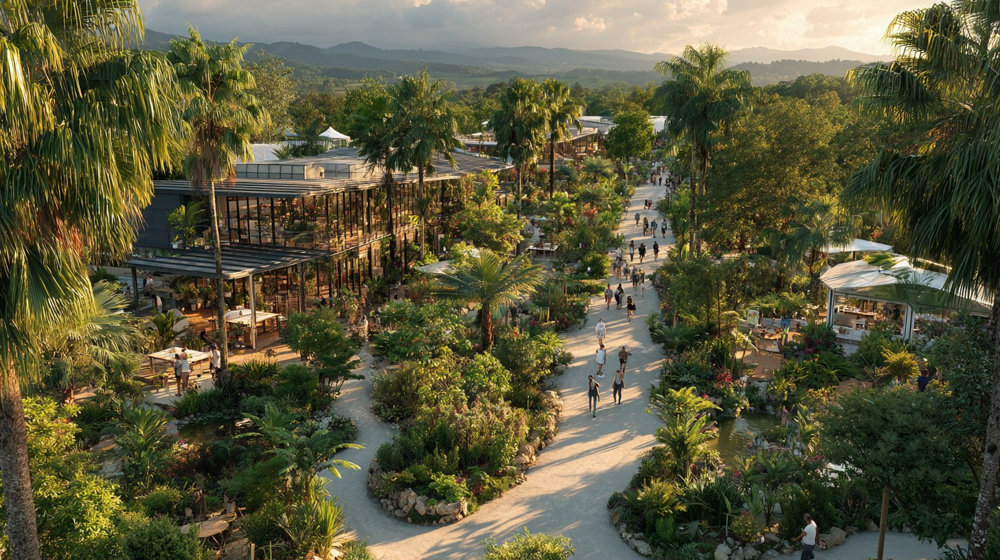

Magasin Jardiland Guadeloupe : nos deux jardineries
Vous cherchez un magasin Jardiland Guadeloupe près de chez vous ? Nos deux jardineries, à Baie-Mahault et aux Abymes, vous accueillent six jours sur sept avec quatre univers complets : pépinière, animalerie, outils et plein air.
Plus que de simples points de vente, ce sont deux lieux d'expertise où 25 conseillers connaissent le terrain guadeloupéen. Voici toutes les informations pour préparer votre visite en magasin.

Nos deux magasins Jardiland en Guadeloupe
Chaque magasin couvre l'ensemble des univers Jardiland, avec un large choix renouvelé chaque semaine.
Magasin Jardiland Baie-Mahault
Notre magasin historique se situe au Centre commercial Jardi-Village, à Jabrun, 97122 Baie-Mahault. Téléphone : 0590 60 67 00. Accès facile par la N1, à environ 10 minutes de Pointe-à-Pitre. Parking gratuit et accès PMR.
Magasin Jardiland Les Abymes
Notre second magasin se trouve au rond-point de Providence, 97139 Les Abymes, avec un accès direct depuis la N5. Téléphone : 0590 30 02 66. Idéal pour les habitants de Pointe-à-Pitre et du sud Grande-Terre. Parking gratuit et accès PMR.
Préparer sa visite en magasin
Quelques informations pratiques pour profiter pleinement de votre passage dans nos magasins.
Horaires et accès des magasins
Nos deux magasins sont ouverts du lundi au samedi de 8h30 à 19h, et le dimanche de 9h à 13h. Vous cherchez une jardinerie proche de chez vous : nos deux sites sont faciles d'accès, avec un grand parking gratuit.
Quatre univers sous un même toit
Pépinière, animalerie, outils et entretien, plein air et déco : chaque magasin réunit tout pour le jardin, la maison et les animaux. Un seul arrêt suffit pour l'ensemble de vos projets.
Vos questions, nos réponses
Quels sont les horaires des magasins Jardiland ?
Les deux magasins, à Baie-Mahault et aux Abymes, ouvrent du lundi au samedi de 8h30 à 19h et le dimanche de 9h à 13h. Les horaires sont identiques sur les deux sites.
Comment trouver la jardinerie la plus proche ?
Si vous habitez le nord de Grande-Terre ou Basse-Terre, le magasin de Baie-Mahault est le plus accessible. Pour Pointe-à-Pitre, Le Gosier et le sud, privilégiez celui des Abymes, au rond-point de Providence.
Peut-on être conseillé en magasin ?
Bien sûr. Nos 25 conseillers, répartis entre les deux magasins, vous accompagnent gratuitement sur tous vos projets de jardin, d'animalerie ou d'aménagement extérieur.
Une question avant de venir ?
Baie-Mahault : 0590 60 67 00 · Les Abymes : 0590 82 30 23. Nos équipes vous répondent six jours sur sept.
Appeler Baie-Mahault